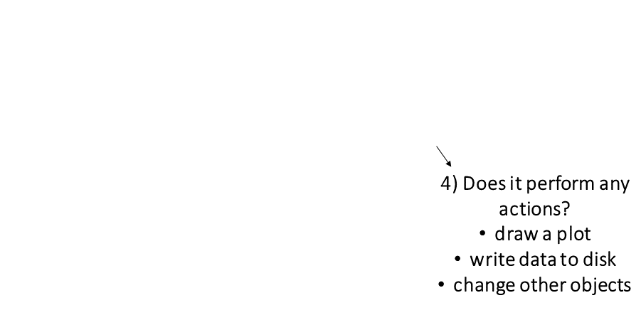
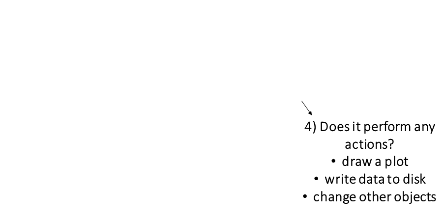

Computing Agroclimate Metrics:
Intro to R

Andy
Lyons
March 24, 2025
https://ucanr-igis.github.io/agroclimR_ucm/

About Me…

Goals
Working with R
- gain some experience doing data analysis with a command line
language
- understand some of the vocabulary used in R
- package
- vector
- function
- argument
- piping
- tidyverse
- data frame
- tibble
- data wrangling
- ggplot
Agroclimate Metrics
- examples of agroclimate metrics
- what can be predicted with agroclimate metrics
- where to get weather data
- hindcast almond bloom
R and RStudio
Why is R So Popular?
It’s free!
Huge user community (especially academics)
Thousands of add-ons (packages) that extend its
capabilities
Particularly strong in plotting and reporting
Once you get over the initial hump, can work very
efficiently
Makes it easy to get your code “out there”
Solid overall programming language

- a programming language to write scripts
- software (“environment”) that interprets scripts written in R
- inspired by ‘S’ (1976), first beta version ~2000
- lots of
user-contributed packages:
- CRAN: >22,000
- Bioconductor: >2,000
- R-Forge: >2,000
- GitHub: >85,400

- a very popular tool (IDE) to work with both R software and R
scripts
- Version 1.0 came out in late 2016
- RStudio needs R to run, but you can use R without RStudio
- Posit Cloud - run
RStudio through a browser

- online RStudio and Jupyter Notebooks
- requires an account (free account gets you 25 hrs / month)
- 98% same as RStudio Desktop
- have to upload your data to the cloud
- everything gets saved between sessions
- workspaces and projects can be shared with collaborators
Exercise 1: RStudio Exploration and Basic Commands
Exercise 1 Topics
- Using R like a fancy calculator
- Order of operations
- Comparison operators
- Saving the results of expressions to variable
- Rules for naming variables
Posit Cloud project for this workshop:
https://bit.ly/agroclim-ucm
After it opens:

Exercise Review
Key vocabulary terms are in italic.
When you enter an expression at the console, R
will evaluate the expression, and print the results at
the console.
If you enter an incomplete expression, R will prompt you
to finish the job by showing a ‘+’ symbol in the console
You can save the results of an expression to an
object (variable) using an assignment operator
=
<-
R objects can be named almost anything (but no spaces or
hyphens please)
R is case sensitive about
everything
Once defined, R objects can be used in subsequent
expressions
R objects can be updated (assigned a new value)
R objects are only saved in memory, and will disappear
when you close RStudio
R has a few built-in constants, which are like objects
but you don’t have to define them
R Packages

Packages are what R calls extensions or
add-ons.
What’s in a package?
- additional functions!
- function help pages
- tutorials (Vignettes)
- datasets
Functions
The keys to R’s superpowers are functions! There are
four things you need to know to use a function:
Which function should I use?
Finding the right R function, half the battle is.
- Jedi MasteR
Yoda
|

|
Ask your friends
Ask Google
Cheatsheets!
Piping
Piping syntax is an alternative way of writing
arguments into functions.
With piping, you use the pipe operator |> (or %>%) to ‘feed’ the result of one function
into the next function.
Piping allows the results of one function to be passed as the
first argument of the next function. Hence a series of
commands to be written like a sentence.
Example
Consider the expression:
zoo(moo(boo(foo(99)),n=4))
Data Frames & Tibbles

R has two data classes that organize data in rows and columns:
- data frames / tibble
- matrices
Key concepts
- columns of a data frame are vectors
- columns have names
- you can refer to columns by their name or
position
Data Wrangling: What do we mean?
Whatever is needed to get your data frame ready
for the function(s) you want to use for analysis and visualization.
also called data munging, manipulation, transformation, etc.
Often includes one or more of:
- dropping columns
- renaming columns
- changing the order of columns
- creating new columns with an expression
- filtering rows
- sorting rows
- going from ‘long’ to ‘wide’ formats
- joining data frames based on a common field
- merging data frames together
- splitting tables
- aggregating rows into groups
Data wrangling is a pain!
But R (specifically the tidyverse packages) makes it (a lot)
easier.
Data Wrangling with dplyr
An alternative (usually better) way to wrangle data frames than base
R.
Part of the tidyverse.
Best way to familiarize yourself - explore the cheat sheet:
Popular dplyr Functions
Row and Column Manipulations
|
subset rows
|
filter(), slice()
|
|
order rows
|
arrange()
|
|
pick column(s)
|
select(), pull()
|
|
add new columns
|
mutate()
|
Chaining dplyr functions
Most dplyr functions take a tibble as the first
argument , and return a tibble.
This makes them very pipe friendly.
Forecasting Almond Bloom
Theoretical example:
Step 1: Predict when
dormancy breaks
- Nonpareil dormancy breaks when 23 chill portions
accumulate starting September 1 (source)
Step 2: Predict
when bloom occurs after dormancy
- Bloom can be predicted using a degree day model after dormancy
ends

Exercise 2: Import Weather Data & Compute Chill Portions
Exercise 2 Topics
- Run code in a script
- Import saved weather data (CIMIS Station 206)
- Plot it
- Compute chill portions
https://bit.ly/agroclim-ucm
Exercise 2 Review
- importing CSV data is easy
- there are good R packages to compute chill and degree days
- often you have to wrangle the data for analysis
- wrangling data with code is easy (once you know how to do it)
Scripts
Top five advantages of using scripts over the console:
-
Easier to write (and fix!) your code
-
You can add comments to remind yourself what each command is doing
-
Reuse your own code
-
You can add loops and if-then statements later on
-
Tell your friends you’re a
coder!

Exercise 3: Compute Chill Portions for the Coming Decades
END!


 
